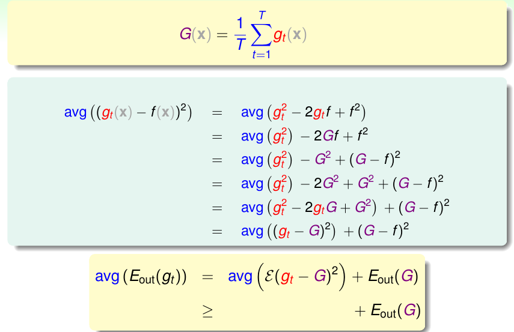
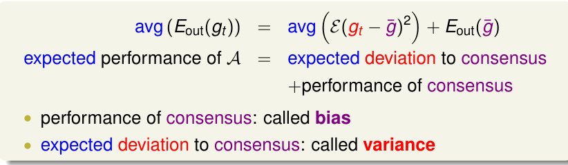
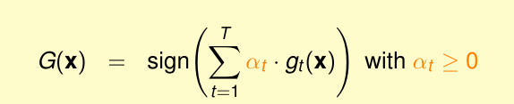
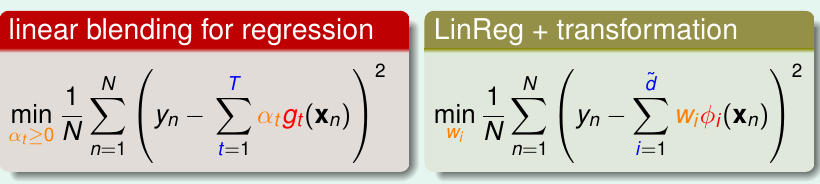

23 Blending and Bagging
《机器学习技法》系列课程（七）
Motivation of Aggregation
在机器学习中，我们可能需要将一些假设函数和特征组合在一起使用，这就是我们现在要说的Aggregation。那么我们为什么要引入这个方法，其原因就在于融合多个hypothese往往能够获得更好的性能表现。
那么直观来看，我们该怎样融合？
- 我们之前使用Validation的方法来选择最佳的hypothesis，这仅仅利用了一个h(x)。
- 平等地使用多个h(x)，就像投票一样，看那个票数多，这就是所谓的uniformly。
- 由于不同的假设函数的重要程度不同，可能有的起到了决定作用，另一些则没那么重要，所以可以对不同的h(x)赋予不同的权重（non-uniformly）。
- 添加一些条件，如果满足条件，就使用这种假设，并且根据所满足的程度赋予不同的权重（conditionally）。
对于上面的几种方案，我们很容易将其用数学形式表达出来，其中：
- 选择Eval最小的（argmin）：G(x) = gt’(x), t’= argminEval(gt)。
- G(x) = sign(sum(g(x)))。
- G(x) = sign(sum(a * g(x)))
- G(x) = sign(sum(q(x)* g(x)))
** 注：可以到机器学习技法第七个ppt中查看具体的公式 **
实际上我们发现，第四个使用一个函数q(x)来确定条件，其他几种方法都是它的子集。
但是，在这里我们需要注意的是，如果我们联合了多个hypothesis来做分类，那么怎么选择最优的就很重要。我们应该选择优化Eval而不是Ein，否则这将会给计算带来巨大的困难（要考虑所有Hypothesis的dvc）。
在我们之前一直做的都是从假设空间中选择最优的h(x)，然而，我们现在使用了Aggregation，它将一些不同的hypotheses综合到一起考虑，可能这里的一些假设函数要比最优的假设函数的效果还差，我们还能保证得到的结果比仅仅用一个最佳h(x)要好吗？答案是肯定的，对多个假设合理的组合（尽管他们中的个体是weak的）能够获得更好的性能！我们可以从PLA的分类结果来考虑：PLA有多条分类边界，最好的是距离两种点的距离都很远的（或者说在中间的），这就是我们SVM能得到的结果，如果我们将PLA的所有结果平均一下，可以发现它基本就是最中间的那条。
Uniform Blending
我们考虑使用Uniform Blending来解决分类问题，这个就像刚刚所说的，是一个投票问题，每个假设g(x)都有同样的权重1，然后将他们线性组合以后取sign来分类：
G(X) = sign(sum(1 * gt(x))) {t from 1 to T}
对于这种解决方案，如果gt都是相同的，实际上和使用一个gt没什么两样。如果gt是不同的，根据投票的原理，少数人服从多数，最终G(x)的结果也会收到gt中占比多的情况所影响。
当然，这种方法也同样使用于多分类问题，其核心思想是没有任何区别的。
那么如果我们想将uniform blending方法用到回归问题上呢？简单的将所有假设函数的数值加到一起输出肯定是不行的，我们可以加和取平均来解决这种问题。
G(X) = 1 / T * sum(1 * gt(x)) {t from 1 to T}
和分类问题类似，如果gt是相同的，那和使用一个gt没有区别，如果不同，对多个取平均可能会比单个的表现要好，因为一般来说，总会存在一些gt要小于f，而另一些要大于f，平均后和f比会更加接近。
如果我们使用了多个假设函数，甚至是很简单的uniform blending，我们最终获得的结果都要比使用单一的hypothesis要好，对于这一点，我们可以从理论上给予证明，证明方法就是看我们单一的g和f的差距和G和f的差距的大小，如果前者比后者要大，则证明了我们的观点，详细的证明方法如下：

上图是证明的过程和结论，其结论说明了单个g和f的差值的平方等于G和f的差值的平方加上一个正数，这也就支持了我们的理论。
最后，我们考虑如果在取平均的表达式中T趋近无穷大，也就是说我们利用了几乎所有的hypothesis时的情况。此时：

此时我们能够降低方差（variance），从而得到更好的性能。
Linear and Any Blending
刚刚我们同等对待每一个hypothesis，那么现在我们考虑Linear Blending，它为每一个假设乘以一个权重αt：

看起来我们很难求解，但是我们可以对比使用特征转换的线性回归问题，发现他们是很相似的：

所以，我们求解的线性的blending问题，可以当做是一个线性模型附带一些约束条件，并且将这些hypothesis当做是特征转换即可。不过实际操作中，对于αt>=转换函数）。
同样，在进行选择时，我们仍然使用Eval。如果我们使用Ein进行选择，就是在最好的里面选择最好的，那么最终的计算需要考虑所有的模型复杂度。
当然，除了使用线性的Blending之外，我们也可以使用非线性的Blending(Any Blending)，我们称其为Stacking，它求解一个个函数g~(x)作为参数。区别在于后者学习能力更强，但是也更容易overfit，这一点需要特别注意。
Bagging (Bootstrap Aggregation)
我们使用Blending，是因为将很多和不同的假设Hypothesis组合在一起使用能够带来更好的效果，注意这里的hypothesis必须是不同的，否则将会和使用一个没什么区别。那么这些不同的gt是从哪儿来的呢？
- 我们可以使用不同的模型（Hypothesis Set）来获得不同的gt。
- 可以使用不同的参数，比如在随机梯度下降过程中，分别使用不同的学习率来学习到不同的gt。
- 我们可以使用随机算法，比如在中，我们随机获得的分类线是不同的。
- 我们也可以通过使用不同的数据来获得不同的gt。
我们需要使用不同的gt，下面我们要考虑如何使用相同的数据集来模拟出不同的数据。实现这个目的的方法就是Bootstrapping，其意义就是从容量为N的数据中抽取出容量为N的数据副本，但是这个抽取过程是有放回的抽取，这也就保证了基本上每一份数据都是不同的。我们使用Bootstrapping来做Aggregation这种方法就是Bagging。
如果演算法对数据的分布很敏感，那么Bagging通常能够获得很好的效果！
文章内容和图片均来自“国立台湾大学林轩田老师”的《机器学习技法》课程！
— END —